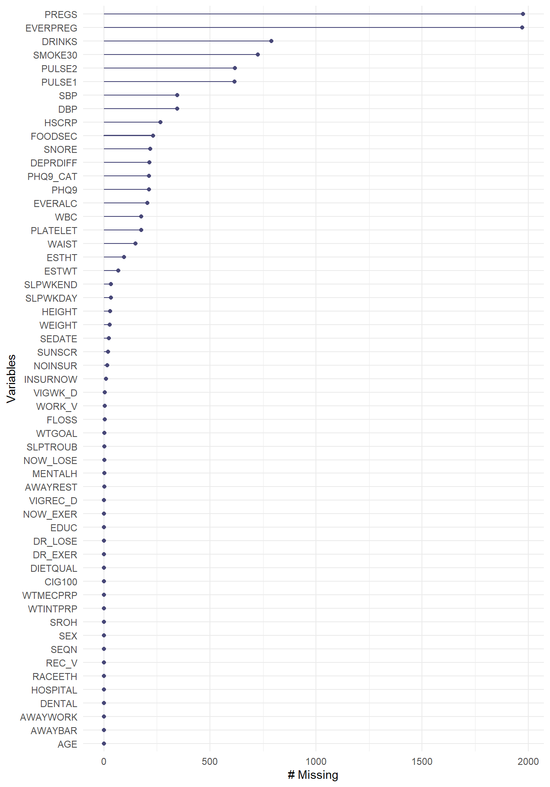

knitr::opts_chunk$set(comment = NA)
library(janitor)
library(gt)
library(gtsummary)
library(Hmisc)
library(mosaic)
library(naniar)
library(tidyverse)
theme_set(theme_bw())2 Codebook for nh432
2.1 R Setup
2.1.1 Data Load
nh432 <- read_rds("data/nh432.Rds")2.2 Quantitative Variables in nh432
t1_quantitative <- df_stats(~ AGE + WEIGHT + HEIGHT + WAIST + SBP + DBP +
PULSE1 + PULSE2 + WBC + PLATELET + HSCRP +
ESTHT + ESTWT + VIGWK_D + VIGREC_D + SEDATE + PHQ9 +
SLPWKDAY + SLPWKEND + DRINKS + SMOKE30 +
FLOSS + PREGS, data = nh432) |>
mutate(across(.cols = -c(response, n, missing),
round_half_up, digits = 1)) |>
rename(med = median, "NA" = missing)
t1_quantitative |>
mutate(description =
c("Age (years)", "Weight (kg)", "Height (cm)",
"Waist circumference (cm)", "Systolic BP (mm Hg)",
"Diastolic BP (mm Hg)", "1st Pulse (beats/min)",
"2nd Pulse (beats/min)", "White Blood Cell Count (1000 cells/uL)",
"Platelets (1000 cells/uL)",
"High-Sensitivity C-Reactive Protein (mg/L)",
"Self Estimate: Height (in)", "Self-Estimate: Weight (lb)",
"Vigorous Work per week (days)",
"Vigorous Recreation per week (days)",
"Sedentary Activity per day (minutes)",
"PHQ-9 Depression Screener Score (points)",
"Average weekday sleep (hours)", "Average weekend sleep (hours)",
"Average Alcohol per day (drinks)",
"Days smoked cigarette in last 30",
"Days Flossed in last 7", "Pregnancies")) |>
select(response, description, everything()) |>
gt() |>
tab_header(title = "Quantitative Variables in nh432")| Quantitative Variables in nh432 | ||||||||||
| response | description | min | Q1 | med | Q3 | max | mean | sd | n | NA |
|---|---|---|---|---|---|---|---|---|---|---|
| AGE | Age (years) | 30.0 | 37.0 | 45.0 | 53.0 | 59.0 | 44.8 | 8.7 | 3931 | 0 |
| WEIGHT | Weight (kg) | 36.9 | 69.3 | 82.1 | 99.1 | 254.3 | 86.3 | 24.6 | 3903 | 28 |
| HEIGHT | Height (cm) | 135.3 | 160.0 | 166.9 | 174.7 | 198.7 | 167.4 | 10.1 | 3901 | 30 |
| WAIST | Waist circumference (cm) | 57.9 | 89.1 | 99.2 | 111.7 | 178.0 | 101.5 | 17.7 | 3782 | 149 |
| SBP | Systolic BP (mm Hg) | 69.0 | 110.0 | 120.0 | 131.0 | 222.0 | 121.5 | 17.0 | 3585 | 346 |
| DBP | Diastolic BP (mm Hg) | 31.0 | 69.0 | 76.0 | 84.0 | 136.0 | 77.0 | 11.7 | 3585 | 346 |
| PULSE1 | 1st Pulse (beats/min) | 38.0 | 62.0 | 69.0 | 77.0 | 126.0 | 70.3 | 11.6 | 3316 | 615 |
| PULSE2 | 2nd Pulse (beats/min) | 37.0 | 63.0 | 70.0 | 78.0 | 121.0 | 71.0 | 11.6 | 3314 | 617 |
| WBC | White Blood Cell Count (1000 cells/uL) | 2.3 | 5.7 | 6.9 | 8.4 | 22.8 | 7.3 | 2.2 | 3755 | 176 |
| PLATELET | Platelets (1000 cells/uL) | 47.0 | 210.0 | 246.0 | 290.0 | 818.0 | 253.3 | 66.4 | 3755 | 176 |
| HSCRP | High-Sensitivity C-Reactive Protein (mg/L) | 0.1 | 0.9 | 2.1 | 4.7 | 182.8 | 4.3 | 8.3 | 3664 | 267 |
| ESTHT | Self Estimate: Height (in) | 50.0 | 63.0 | 66.0 | 69.0 | 81.0 | 66.5 | 4.2 | 3836 | 95 |
| ESTWT | Self-Estimate: Weight (lb) | 86.0 | 150.0 | 180.0 | 216.0 | 578.0 | 188.1 | 52.2 | 3863 | 68 |
| VIGWK_D | Vigorous Work per week (days) | 0.0 | 0.0 | 0.0 | 2.0 | 7.0 | 1.2 | 2.1 | 3926 | 5 |
| VIGREC_D | Vigorous Recreation per week (days) | 0.0 | 0.0 | 0.0 | 1.0 | 7.0 | 0.9 | 1.7 | 3930 | 1 |
| SEDATE | Sedentary Activity per day (minutes) | 2.0 | 180.0 | 300.0 | 480.0 | 1320.0 | 332.7 | 210.2 | 3907 | 24 |
| PHQ9 | PHQ-9 Depression Screener Score (points) | 0.0 | 0.0 | 2.0 | 5.0 | 26.0 | 3.3 | 4.3 | 3718 | 213 |
| SLPWKDAY | Average weekday sleep (hours) | 2.0 | 6.5 | 7.5 | 8.0 | 14.0 | 7.4 | 1.6 | 3897 | 34 |
| SLPWKEND | Average weekend sleep (hours) | 2.0 | 7.0 | 8.0 | 9.0 | 14.0 | 8.2 | 1.8 | 3897 | 34 |
| DRINKS | Average Alcohol per day (drinks) | 0.0 | 1.0 | 2.0 | 3.0 | 15.0 | 2.3 | 2.2 | 3142 | 789 |
| SMOKE30 | Days smoked cigarette in last 30 | 0.0 | 0.0 | 0.0 | 5.0 | 30.0 | 6.8 | 12.1 | 3205 | 726 |
| FLOSS | Days Flossed in last 7 | 0.0 | 0.0 | 3.0 | 7.0 | 7.0 | 3.5 | 2.9 | 3927 | 4 |
| PREGS | Pregnancies | 0.0 | 2.0 | 3.0 | 4.0 | 11.0 | 3.0 | 2.1 | 1956 | 1975 |
2.3 Two-Category (1/0) Variables in nh432
nh_dich_vars <- nh432 |>
select(HOSPITAL, MENTALH, EVERALC, INSURNOW, NOINSUR, DR_LOSE,
DR_EXER, NOW_LOSE, NOW_EXER, WORK_V, REC_V, EVERPREG,
SLPTROUB, CIG100, AWAYWORK, AWAYREST, AWAYBAR)
temp1 <- nh_dich_vars |> summarise(across(.cols = everything(),
~ sum(.x, na.rm = TRUE)))
temp2 <- nh_dich_vars |> summarise(across(.cols = everything(),
~ round_half_up(100*mean(.x, na.rm = TRUE), 1)))
temp3 <- nh_dich_vars |> summarise(across(.cols = everything(),
~ n_miss(.x)))
nh_dichotomous_summary <- bind_rows(temp1, temp2, temp3) |>
mutate(summary = c("Yes", "% Yes", "# NA")) |>
relocate(summary) |>
pivot_longer(!summary, names_to = "variable") |>
pivot_wider(names_from = summary) |>
mutate(Description =
c("Overnight hospital patient in past 12m?",
"Seen mental health professional past 12m?",
"Ever had a drink of alcohol?",
"Covered by health insurance now?",
"Time when no insurance in past year?",
"Doctor said to control/lose weight past 12m?",
"Doctor said to exercise in past 12m?",
"Are you now controlling or losing weight?",
"Are you now increasing exercise?",
"Vigorous work activity for 10 min/week?",
"Vigorous recreational activity for 10 min/week?",
"Ever been pregnant?",
"Ever told a doctor you had trouble sleeping?",
"Smoked at least 100 cigarettes in your life?",
"Last 7 days worked at a job not at home?",
"Last 7 days spent time in a restaurant?",
"Last 7 days spent time in a bar?"))
nh_dichotomous_summary |>
gt()| variable | Yes | % Yes | # NA | Description |
|---|---|---|---|---|
| HOSPITAL | 343 | 8.7 | 0 | Overnight hospital patient in past 12m? |
| MENTALH | 475 | 12.1 | 2 | Seen mental health professional past 12m? |
| EVERALC | 3393 | 91.1 | 205 | Ever had a drink of alcohol? |
| INSURNOW | 3169 | 80.8 | 10 | Covered by health insurance now? |
| NOINSUR | 1041 | 26.6 | 16 | Time when no insurance in past year? |
| DR_LOSE | 1189 | 30.3 | 1 | Doctor said to control/lose weight past 12m? |
| DR_EXER | 1680 | 42.7 | 1 | Doctor said to exercise in past 12m? |
| NOW_LOSE | 2485 | 63.2 | 2 | Are you now controlling or losing weight? |
| NOW_EXER | 2369 | 60.3 | 1 | Are you now increasing exercise? |
| WORK_V | 1116 | 28.4 | 4 | Vigorous work activity for 10 min/week? |
| REC_V | 1056 | 26.9 | 0 | Vigorous recreational activity for 10 min/week? |
| EVERPREG | 1747 | 89.2 | 1972 | Ever been pregnant? |
| SLPTROUB | 1159 | 29.5 | 3 | Ever told a doctor you had trouble sleeping? |
| CIG100 | 1576 | 40.1 | 1 | Smoked at least 100 cigarettes in your life? |
| AWAYWORK | 2663 | 67.7 | 0 | Last 7 days worked at a job not at home? |
| AWAYREST | 2283 | 58.1 | 2 | Last 7 days spent time in a restaurant? |
| AWAYBAR | 605 | 15.4 | 0 | Last 7 days spent time in a bar? |
2.4 Factor Variables in nh432
nh_factor_vars <- nh432 |>
select(where(~ is.factor(.x)))
tbl_summary(nh_factor_vars,
label = list(RACEETH = "RACEETH: Race/Ethnicity",
EDUC = "EDUC: Educational Attainment",
SROH = "SROH: Self-reported Overall Health",
WTGOAL = "WTGOAL: Like to weigh more/less/the same?",
DIETQUAL = "DIETQUAL: How healthy is your diet?",
FOODSEC = "FOODSEC: Adult food security (last 12m)",
PHQ9_CAT = "PHQ9_CAT: Depression Screen Category",
DEPRDIFF = "DEPRDIFF: Difficulty with Depression?",
SNORE = "SNORE: How often do you snore?",
DENTAL = "DENTAL: Recommendation for Dental Care?",
SUNSCR = "SUNSCR: Use sunscreen on very sunny day?"),
missing_text = "(# NA)")| Characteristic | N = 3,9311 |
|---|---|
| RACEETH: Race/Ethnicity | |
| Non-H White | 1,192 (30%) |
| Non-H Black | 1,049 (27%) |
| Hispanic | 903 (23%) |
| Non-H Asian | 588 (15%) |
| Other Race | 199 (5.1%) |
| EDUC: Educational Attainment | |
| Less than 9th Grade | 272 (6.9%) |
| 9th - 11th Grade | 424 (11%) |
| High School Grad | 850 (22%) |
| Some College / AA | 1,287 (33%) |
| College Grad | 1,097 (28%) |
| (# NA) | 1 |
| SEX | |
| Female | 2,094 (53%) |
| Male | 1,837 (47%) |
| SROH: Self-reported Overall Health | |
| Excellent | 495 (13%) |
| Very Good | 1,071 (27%) |
| Good | 1,462 (37%) |
| Fair | 765 (19%) |
| Poor | 138 (3.5%) |
| WTGOAL: Like to weigh more/less/the same? | |
| More | 289 (7.4%) |
| Same | 974 (25%) |
| Less | 2,665 (68%) |
| (# NA) | 3 |
| DIETQUAL: How healthy is your diet? | |
| Excellent | 260 (6.6%) |
| Very Good | 758 (19%) |
| Good | 1,519 (39%) |
| Fair | 1,082 (28%) |
| Poor | 311 (7.9%) |
| (# NA) | 1 |
| FOODSEC: Adult food security (last 12m) | |
| Full | 2,247 (61%) |
| Marginal | 565 (15%) |
| Low | 503 (14%) |
| Very Low | 385 (10%) |
| (# NA) | 231 |
| PHQ9_CAT: Depression Screen Category | |
| minimal | 2,748 (74%) |
| mild | 621 (17%) |
| moderate | 220 (5.9%) |
| moderately severe | 91 (2.4%) |
| severe | 38 (1.0%) |
| (# NA) | 213 |
| DEPRDIFF: Difficulty with Depression? | |
| Not at all | 3,039 (82%) |
| Somewhat | 541 (15%) |
| Very | 93 (2.5%) |
| Extremely | 43 (1.2%) |
| (# NA) | 215 |
| SNORE: How often do you snore? | |
| Never | 855 (23%) |
| Rarely | 959 (26%) |
| Occasionally | 700 (19%) |
| Frequently | 1,198 (32%) |
| (# NA) | 219 |
| DENTAL: Recommendation for Dental Care? | |
| See dentist urgently | 234 (6.0%) |
| See dentist soon | 1,671 (43%) |
| Regular Routine | 2,026 (52%) |
| SUNSCR: Use sunscreen on very sunny day? | |
| Always | 351 (9.0%) |
| Most of the time | 485 (12%) |
| Sometimes | 831 (21%) |
| Rarely | 662 (17%) |
| Never | 1,583 (40%) |
| (# NA) | 19 |
| 1 n (%) | |
2.5 Detailed Numerical Description for nh432
describe(nh432)nh432
55 Variables 3931 Observations
--------------------------------------------------------------------------------
SEQN
n missing distinct
3931 0 3931
lowest : 109271 109273 109284 109291 109292, highest: 124807 124810 124813 124815 124818
--------------------------------------------------------------------------------
AGE
n missing distinct Info Mean pMedian Gmd .05
3931 0 30 0.999 44.79 45 10.09 31
.10 .25 .50 .75 .90 .95
33 37 45 53 57 58
lowest : 30 31 32 33 34, highest: 55 56 57 58 59
--------------------------------------------------------------------------------
RACEETH
n missing distinct
3931 0 5
Value Non-H White Non-H Black Hispanic Non-H Asian Other Race
Frequency 1192 1049 903 588 199
Proportion 0.303 0.267 0.230 0.150 0.051
--------------------------------------------------------------------------------
EDUC
n missing distinct
3930 1 5
Value Less than 9th Grade 9th - 11th Grade High School Grad
Frequency 272 424 850
Proportion 0.069 0.108 0.216
Value Some College / AA College Grad
Frequency 1287 1097
Proportion 0.327 0.279
--------------------------------------------------------------------------------
SEX
n missing distinct
3931 0 2
Value Female Male
Frequency 2094 1837
Proportion 0.533 0.467
--------------------------------------------------------------------------------
INSURNOW
n missing distinct Info Sum Mean
3921 10 2 0.465 3169 0.8082
--------------------------------------------------------------------------------
NOINSUR
n missing distinct Info Sum Mean
3915 16 2 0.586 1041 0.2659
--------------------------------------------------------------------------------
SROH
n missing distinct
3931 0 5
Value Excellent Very Good Good Fair Poor
Frequency 495 1071 1462 765 138
Proportion 0.126 0.272 0.372 0.195 0.035
--------------------------------------------------------------------------------
WEIGHT
n missing distinct Info Mean pMedian Gmd .05
3903 28 969 1 86.31 84.1 26.59 54.20
.10 .25 .50 .75 .90 .95
58.82 69.30 82.10 99.10 119.30 131.49
lowest : 36.9 39.4 39.6 39.8 39.9 , highest: 204.4 204.6 210.8 242.6 254.3
--------------------------------------------------------------------------------
HEIGHT
n missing distinct Info Mean pMedian Gmd .05
3901 30 484 1 167.4 167.2 11.45 152.0
.10 .25 .50 .75 .90 .95
154.8 160.0 166.9 174.7 180.8 184.6
lowest : 135.3 138.3 139.7 141.4 141.9, highest: 195.8 195.9 196.6 198.3 198.7
--------------------------------------------------------------------------------
WAIST
n missing distinct Info Mean pMedian Gmd .05
3782 149 781 1 101.5 100.4 19.68 75.9
.10 .25 .50 .75 .90 .95
80.4 89.1 99.2 111.7 125.4 134.5
lowest : 57.9 62.7 63.2 64.5 64.9 , highest: 166 167.1 170.8 173.1 178
--------------------------------------------------------------------------------
SBP
n missing distinct Info Mean pMedian Gmd .05
3585 346 116 1 121.5 120.5 18.61 98
.10 .25 .50 .75 .90 .95
102 110 120 131 143 152
lowest : 69 72 77 79 80, highest: 199 200 211 219 222
--------------------------------------------------------------------------------
DBP
n missing distinct Info Mean pMedian Gmd .05
3585 346 81 0.999 77.03 76.5 13.01 59.2
.10 .25 .50 .75 .90 .95
63.0 69.0 76.0 84.0 92.0 97.0
lowest : 31 44 45 46 47, highest: 121 122 126 127 136
--------------------------------------------------------------------------------
PULSE1
n missing distinct Info Mean pMedian Gmd .05
3316 615 76 0.999 70.3 69.5 12.92 53
.10 .25 .50 .75 .90 .95
57 62 69 77 86 91
lowest : 38 40 41 42 44, highest: 114 115 120 121 126
--------------------------------------------------------------------------------
PULSE2
n missing distinct Info Mean pMedian Gmd .05
3314 617 80 0.999 70.96 70.5 12.92 54
.10 .25 .50 .75 .90 .95
57 63 70 78 86 91
lowest : 37 39 40 41 42, highest: 117 118 119 120 121
--------------------------------------------------------------------------------
WBC
n missing distinct Info Mean pMedian Gmd .05
3755 176 136 1 7.254 7.1 2.387 4.3
.10 .25 .50 .75 .90 .95
4.8 5.7 6.9 8.4 10.1 11.3
lowest : 2.3 2.5 2.6 2.7 2.8 , highest: 17.2 17.4 17.6 20.6 22.8
--------------------------------------------------------------------------------
PLATELET
n missing distinct Info Mean pMedian Gmd .05
3755 176 372 1 253.3 249.5 72.04 159
.10 .25 .50 .75 .90 .95
179 210 246 290 337 371
lowest : 47 48 54 57 61, highest: 583 602 638 662 818
--------------------------------------------------------------------------------
HSCRP
n missing distinct Info Mean pMedian Gmd .05
3664 267 1065 1 4.326 2.77 5.271 0.350
.10 .25 .50 .75 .90 .95
0.470 0.890 2.090 4.740 9.217 13.630
lowest : 0.11 0.16 0.17 0.18 0.19 , highest: 102.94 104.48 109.81 138.81 182.82
--------------------------------------------------------------------------------
DR_LOSE
n missing distinct Info Sum Mean
3930 1 2 0.633 1189 0.3025
--------------------------------------------------------------------------------
DR_EXER
n missing distinct Info Sum Mean
3930 1 2 0.734 1680 0.4275
--------------------------------------------------------------------------------
NOW_LOSE
n missing distinct Info Sum Mean
3929 2 2 0.697 2485 0.6325
--------------------------------------------------------------------------------
NOW_EXER
n missing distinct Info Sum Mean
3930 1 2 0.718 2369 0.6028
--------------------------------------------------------------------------------
ESTHT
n missing distinct Info Mean pMedian Gmd .05
3836 95 29 0.995 66.46 66.5 4.722 60
.10 .25 .50 .75 .90 .95
61 63 66 69 72 74
lowest : 50 53 54 55 56, highest: 76 77 78 79 81
--------------------------------------------------------------------------------
ESTWT
n missing distinct Info Mean pMedian Gmd .05
3863 68 255 1 188.1 183.5 56.51 120.0
.10 .25 .50 .75 .90 .95
130.0 150.0 180.0 216.0 258.0 281.9
lowest : 86 88 90 93 95, highest: 416 434 450 457 578
--------------------------------------------------------------------------------
WTGOAL
n missing distinct
3928 3 3
Value More Same Less
Frequency 289 974 2665
Proportion 0.074 0.248 0.678
--------------------------------------------------------------------------------
DIETQUAL
n missing distinct
3930 1 5
Value Excellent Very Good Good Fair Poor
Frequency 260 758 1519 1082 311
Proportion 0.066 0.193 0.387 0.275 0.079
--------------------------------------------------------------------------------
FOODSEC
n missing distinct
3700 231 4
Value Full Marginal Low Very Low
Frequency 2247 565 503 385
Proportion 0.607 0.153 0.136 0.104
--------------------------------------------------------------------------------
WORK_V
n missing distinct Info Sum Mean
3927 4 2 0.61 1116 0.2842
--------------------------------------------------------------------------------
VIGWK_D
n missing distinct Info Mean pMedian Gmd
3926 5 8 0.632 1.22 0 1.904
Value 0 1 2 3 4 5 6 7
Frequency 2811 79 127 184 112 352 132 129
Proportion 0.716 0.020 0.032 0.047 0.029 0.090 0.034 0.033
--------------------------------------------------------------------------------
REC_V
n missing distinct Info Sum Mean
3931 0 2 0.589 1056 0.2686
--------------------------------------------------------------------------------
VIGREC_D
n missing distinct Info Mean pMedian Gmd
3930 1 8 0.608 0.8952 0 1.436
Value 0 1 2 3 4 5 6 7
Frequency 2875 126 211 301 166 154 46 51
Proportion 0.732 0.032 0.054 0.077 0.042 0.039 0.012 0.013
--------------------------------------------------------------------------------
SEDATE
n missing distinct Info Mean pMedian Gmd .05
3907 24 44 0.99 332.7 330 232.2 60
.10 .25 .50 .75 .90 .95
120 180 300 480 600 720
lowest : 2 3 5 8 9, highest: 960 1020 1080 1200 1320
--------------------------------------------------------------------------------
PHQ9
n missing distinct Info Mean pMedian Gmd .05
3718 213 27 0.958 3.324 2.5 4.201 0
.10 .25 .50 .75 .90 .95
0 0 2 5 9 13
lowest : 0 1 2 3 4, highest: 22 23 24 25 26
--------------------------------------------------------------------------------
PHQ9_CAT
n missing distinct
3718 213 5
Value minimal mild moderate
Frequency 2748 621 220
Proportion 0.739 0.167 0.059
Value moderately severe severe
Frequency 91 38
Proportion 0.024 0.010
--------------------------------------------------------------------------------
DEPRDIFF
n missing distinct
3716 215 4
Value Not at all Somewhat Very Extremely
Frequency 3039 541 93 43
Proportion 0.818 0.146 0.025 0.012
--------------------------------------------------------------------------------
MENTALH
n missing distinct Info Sum Mean
3929 2 2 0.319 475 0.1209
--------------------------------------------------------------------------------
SLPWKDAY
n missing distinct Info Mean pMedian Gmd .05
3897 34 22 0.984 7.359 7.5 1.735 5.0
.10 .25 .50 .75 .90 .95
5.5 6.5 7.5 8.0 9.0 10.0
lowest : 2 3 3.5 4 4.5 , highest: 11 11.5 12 13 14
--------------------------------------------------------------------------------
SLPWKEND
n missing distinct Info Mean pMedian Gmd .05
3897 34 24 0.983 8.231 8.25 1.928 5
.10 .25 .50 .75 .90 .95
6 7 8 9 10 11
lowest : 2 3 3.5 4 4.5 , highest: 12 12.5 13 13.5 14
--------------------------------------------------------------------------------
SLPTROUB
n missing distinct Info Sum Mean
3928 3 2 0.624 1159 0.2951
--------------------------------------------------------------------------------
SNORE
n missing distinct
3712 219 4
Value Never Rarely Occasionally Frequently
Frequency 855 959 700 1198
Proportion 0.230 0.258 0.189 0.323
--------------------------------------------------------------------------------
HOSPITAL
n missing distinct Info Sum Mean
3931 0 2 0.239 343 0.08726
--------------------------------------------------------------------------------
EVERALC
n missing distinct Info Sum Mean
3726 205 2 0.244 3393 0.9106
--------------------------------------------------------------------------------
DRINKS
n missing distinct Info Mean pMedian Gmd .05
3142 789 15 0.948 2.345 2 2.051 0
.10 .25 .50 .75 .90 .95
0 1 2 3 5 6
Value 0 1 2 3 4 5 6 7 8 9 10
Frequency 333 912 903 412 228 123 105 21 37 4 19
Proportion 0.106 0.290 0.287 0.131 0.073 0.039 0.033 0.007 0.012 0.001 0.006
Value 11 12 13 15
Frequency 1 26 2 16
Proportion 0.000 0.008 0.001 0.005
--------------------------------------------------------------------------------
CIG100
n missing distinct Info Sum Mean
3930 1 2 0.721 1576 0.401
--------------------------------------------------------------------------------
SMOKE30
n missing distinct Info Mean pMedian Gmd .05
3205 726 26 0.594 6.808 0 10.5 0
.10 .25 .50 .75 .90 .95
0 0 0 5 30 30
lowest : 0 1 2 3 4, highest: 26 27 28 29 30
--------------------------------------------------------------------------------
AWAYWORK
n missing distinct Info Sum Mean
3931 0 2 0.656 2663 0.6774
--------------------------------------------------------------------------------
AWAYREST
n missing distinct Info Sum Mean
3929 2 2 0.73 2283 0.5811
--------------------------------------------------------------------------------
AWAYBAR
n missing distinct Info Sum Mean
3931 0 2 0.391 605 0.1539
--------------------------------------------------------------------------------
DENTAL
n missing distinct
3931 0 3
Value See dentist urgently See dentist soon Regular Routine
Frequency 234 1671 2026
Proportion 0.060 0.425 0.515
--------------------------------------------------------------------------------
FLOSS
n missing distinct Info Mean pMedian Gmd
3927 4 8 0.934 3.476 3.5 3.248
Value 0 1 2 3 4 5 6 7
Frequency 1104 288 395 329 230 179 44 1358
Proportion 0.281 0.073 0.101 0.084 0.059 0.046 0.011 0.346
--------------------------------------------------------------------------------
EVERPREG
n missing distinct Info Sum Mean
1959 1972 2 0.29 1747 0.8918
--------------------------------------------------------------------------------
PREGS
n missing distinct Info Mean pMedian Gmd .05
1956 1975 12 0.973 3.046 3 2.24 0
.10 .25 .50 .75 .90 .95
0 2 3 4 6 7
Value 0 1 2 3 4 5 6 7 8 9 10
Frequency 212 205 421 420 297 191 95 58 22 10 9
Proportion 0.108 0.105 0.215 0.215 0.152 0.098 0.049 0.030 0.011 0.005 0.005
Value 11
Frequency 16
Proportion 0.008
--------------------------------------------------------------------------------
SUNSCR
n missing distinct
3912 19 5
Value Always Most of the time Sometimes Rarely
Frequency 351 485 831 662
Proportion 0.090 0.124 0.212 0.169
Value Never
Frequency 1583
Proportion 0.405
--------------------------------------------------------------------------------
WTINTPRP
n missing distinct Info Mean pMedian Gmd .05
3931 0 3677 1 28434 20563 27437 5911
.10 .25 .50 .75 .90 .95
7199 10615 17358 31476 65098 94422
lowest : 2467.05 2779.46 2833.29 2917.41 2967.27
highest: 246250 248091 264719 282884 311265
--------------------------------------------------------------------------------
WTMECPRP
n missing distinct Info Mean pMedian Gmd .05
3931 0 3701 1 30353 21829 29409 6217
.10 .25 .50 .75 .90 .95
7634 11365 18422 33155 68569 102038
lowest : 2589.17 2782.74 3003.52 3009.53 3016.64
highest: 267064 268879 273958 308015 321574
--------------------------------------------------------------------------------2.6 Missingness in nh432
miss_case_table(nh432) |> gt()| n_miss_in_case | n_cases | pct_cases |
|---|---|---|
| 0 | 907 | 23.0730094 |
| 1 | 533 | 13.5588909 |
| 2 | 1030 | 26.2019842 |
| 3 | 591 | 15.0343424 |
| 4 | 307 | 7.8097176 |
| 5 | 161 | 4.0956500 |
| 6 | 87 | 2.2131773 |
| 7 | 106 | 2.6965149 |
| 8 | 68 | 1.7298397 |
| 9 | 18 | 0.4578988 |
| 10 | 20 | 0.5087764 |
| 11 | 39 | 0.9921140 |
| 12 | 27 | 0.6868481 |
| 13 | 14 | 0.3561435 |
| 14 | 9 | 0.2289494 |
| 15 | 14 | 0.3561435 |
gg_miss_var(nh432)
miss_var_summary(nh432) |> gt()| variable | n_miss | pct_miss |
|---|---|---|
| PREGS | 1975 | 50.2 |
| EVERPREG | 1972 | 50.2 |
| DRINKS | 789 | 20.1 |
| SMOKE30 | 726 | 18.5 |
| PULSE2 | 617 | 15.7 |
| PULSE1 | 615 | 15.6 |
| SBP | 346 | 8.80 |
| DBP | 346 | 8.80 |
| HSCRP | 267 | 6.79 |
| FOODSEC | 231 | 5.88 |
| SNORE | 219 | 5.57 |
| DEPRDIFF | 215 | 5.47 |
| PHQ9 | 213 | 5.42 |
| PHQ9_CAT | 213 | 5.42 |
| EVERALC | 205 | 5.21 |
| WBC | 176 | 4.48 |
| PLATELET | 176 | 4.48 |
| WAIST | 149 | 3.79 |
| ESTHT | 95 | 2.42 |
| ESTWT | 68 | 1.73 |
| SLPWKDAY | 34 | 0.865 |
| SLPWKEND | 34 | 0.865 |
| HEIGHT | 30 | 0.763 |
| WEIGHT | 28 | 0.712 |
| SEDATE | 24 | 0.611 |
| SUNSCR | 19 | 0.483 |
| NOINSUR | 16 | 0.407 |
| INSURNOW | 10 | 0.254 |
| VIGWK_D | 5 | 0.127 |
| WORK_V | 4 | 0.102 |
| FLOSS | 4 | 0.102 |
| WTGOAL | 3 | 0.0763 |
| SLPTROUB | 3 | 0.0763 |
| NOW_LOSE | 2 | 0.0509 |
| MENTALH | 2 | 0.0509 |
| AWAYREST | 2 | 0.0509 |
| EDUC | 1 | 0.0254 |
| DR_LOSE | 1 | 0.0254 |
| DR_EXER | 1 | 0.0254 |
| NOW_EXER | 1 | 0.0254 |
| DIETQUAL | 1 | 0.0254 |
| VIGREC_D | 1 | 0.0254 |
| CIG100 | 1 | 0.0254 |
| SEQN | 0 | 0 |
| AGE | 0 | 0 |
| RACEETH | 0 | 0 |
| SEX | 0 | 0 |
| SROH | 0 | 0 |
| REC_V | 0 | 0 |
| HOSPITAL | 0 | 0 |
| AWAYWORK | 0 | 0 |
| AWAYBAR | 0 | 0 |
| DENTAL | 0 | 0 |
| WTINTPRP | 0 | 0 |
| WTMECPRP | 0 | 0 |
miss_var_table(nh432) |> gt()| n_miss_in_var | n_vars | pct_vars |
|---|---|---|
| 0 | 12 | 21.818182 |
| 1 | 7 | 12.727273 |
| 2 | 3 | 5.454545 |
| 3 | 2 | 3.636364 |
| 4 | 2 | 3.636364 |
| 5 | 1 | 1.818182 |
| 10 | 1 | 1.818182 |
| 16 | 1 | 1.818182 |
| 19 | 1 | 1.818182 |
| 24 | 1 | 1.818182 |
| 28 | 1 | 1.818182 |
| 30 | 1 | 1.818182 |
| 34 | 2 | 3.636364 |
| 68 | 1 | 1.818182 |
| 95 | 1 | 1.818182 |
| 149 | 1 | 1.818182 |
| 176 | 2 | 3.636364 |
| 205 | 1 | 1.818182 |
| 213 | 2 | 3.636364 |
| 215 | 1 | 1.818182 |
| 219 | 1 | 1.818182 |
| 231 | 1 | 1.818182 |
| 267 | 1 | 1.818182 |
| 346 | 2 | 3.636364 |
| 615 | 1 | 1.818182 |
| 617 | 1 | 1.818182 |
| 726 | 1 | 1.818182 |
| 789 | 1 | 1.818182 |
| 1972 | 1 | 1.818182 |
| 1975 | 1 | 1.818182 |